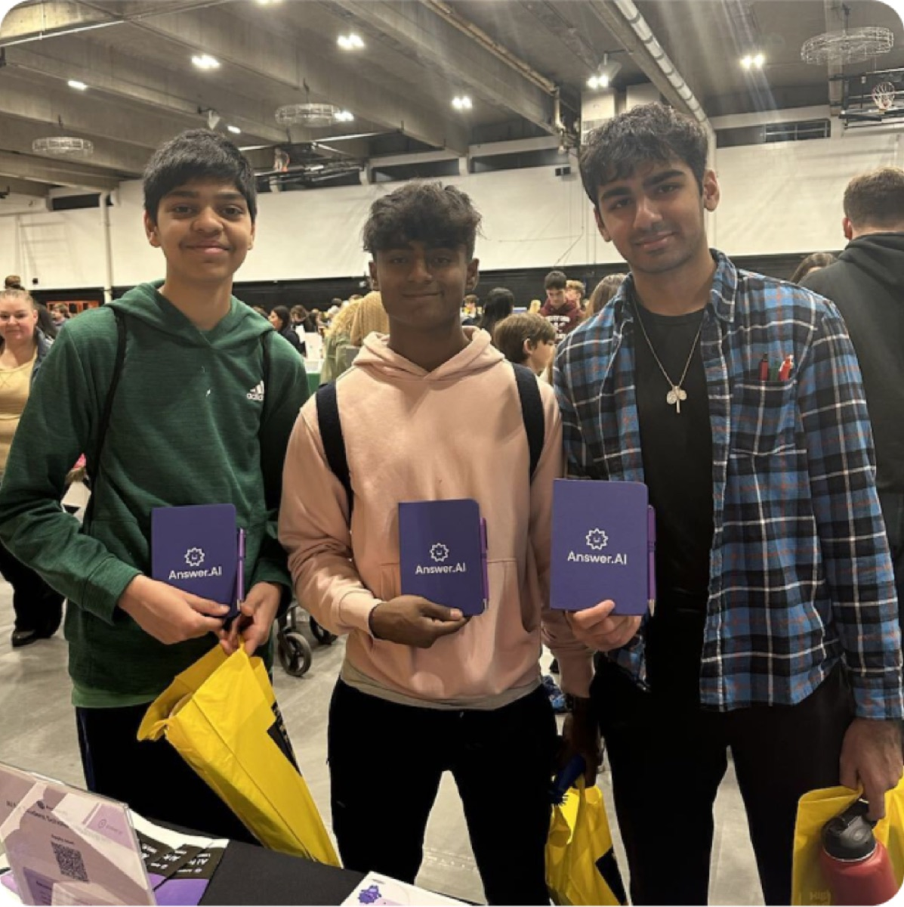
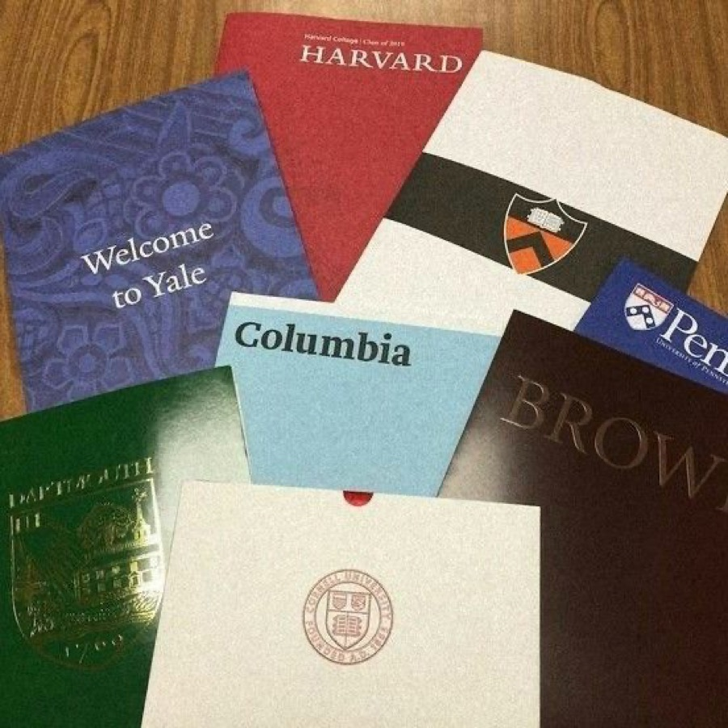

Scan any problem,
learn from the answer.
Answer.AI is an AI learning app: students photograph a homework problem and get an instant, step-by-step solution — then tutors, flashcards and study tools around it.
7 million students. I led the app's full redesign, from direction to ship.

Scan the question

Step-by-step answer
Seven million students,
and every grade counts.
They're working for the grade: tonight's homework, Friday's test, the GPA that decides which school they get into — and most of them are in mid-American towns, where that kind of help is expensive or far away.

Students wanted more from us —
in three different directions.
12 student interviews — 8 online, 4 in person — surfaced three unmet needs. Market research showed each had real commercial potential.

“Before every exam I'm anxious — I never know if I'm actually ready.”
Acely, AI test prep — launched Jan 2024, 10-person team
An AI-native peer proved students pay $49–149 a month for scores.

“I'm the first in my family to apply to college, and the school counselor is hard to get.”
Crimson's starting price; valued near $600M in 2024
Smaller audience, exceptionally high value per student.

“I got the answer, but I still can't do the next one.”
Duolingo revenue, 2023 — everyday, habit-based learning
Habit and scalable monetization in one direction.
All three needs were real. None was an obvious answer.